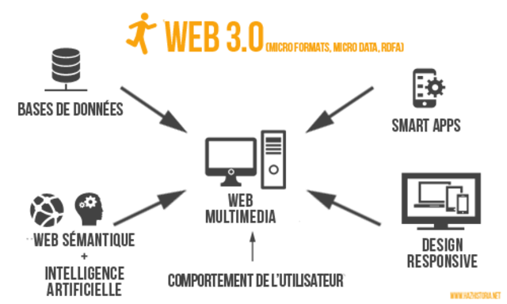
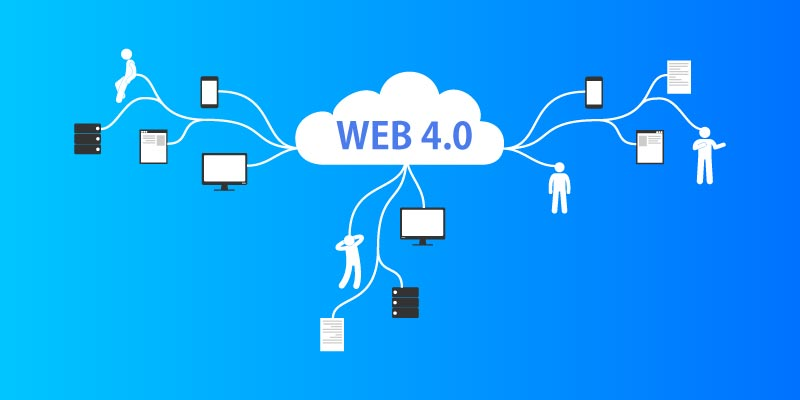

<
<
Línea del tiempo evoluciónav de la Web
Línea del tiempo evolución de la Web
Web 1.0
Web 1.0
1.-Paginas estáticas
2.-Los primeros modelos de negocio basados en la Web
3.- Páginas Web estáticas (sitios Web)
4.- El primer navegador del mundo fue llamado World Wide Web. Creado por Tim
Berners-Lee en 1990
5.- La guerra de navegadores (en inglés: Browser Wars) es el nombre popular
dado a la competencia entre los navegadores web por el dominio del mercado.
Web 2.0
Web 2.0
1.- interactividad (Ajax)
2.- Redes Sociales, Comercio en línea, wikis, herramientas de colaboración ligeras
3.- La Web 2.0 supone un paso adelante en la evolución de Internet, para
incorporar al usuario como un agente activo en su funcionamiento, y no como un
mero cliente o receptor de la información. Esto pasa por sitios web dinámicos, en
los que al usuario se le permita interactuar, generar contenido, o formar parte de
comunidades virtuales.
Web 3.0

Web 3.0
1.- Web Ubicua/ inteligente
2.- sistemas de recomendación, webs semánticas, optimación para móviles,
internet de las cosas (ioT)
3.- JavaScript, XML, JSON (Ajax)
4.- interoperabilidad de Servicios Web (REST)
5.- Computación en la nube
Web 4.0

Web4.0
1.-Comprensión del lenguaje natural (NLU) y técnicas de Speech-to-Text.
2.-Nuevos modelos de comunicación máquina-máquina (M2M). La red estará formada por agentes inteligentes en la nube, que serán capaces de comunicarse entre sí y delegar la respuesta al agente adecuado.
Regresar al inicio